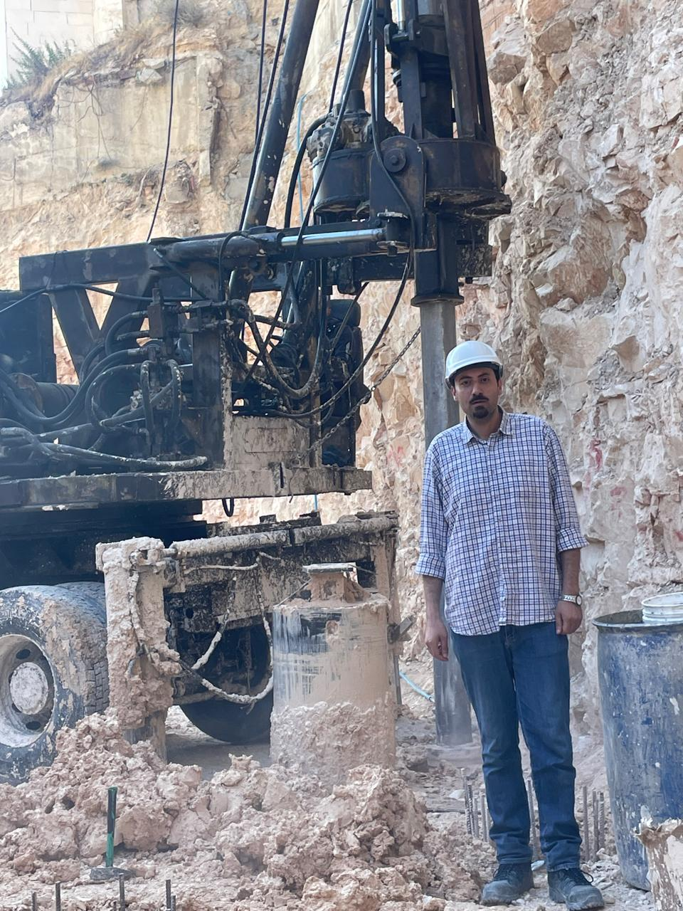
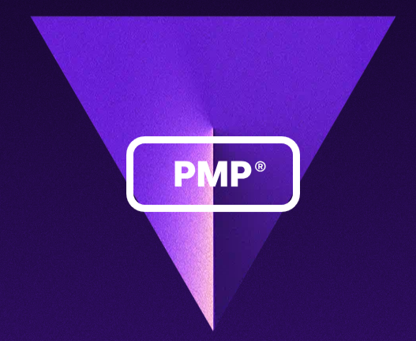
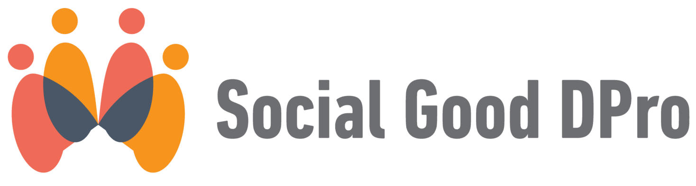

Civil Engineer from O6U | Digital MSc. MBA in Artificial Intelligence from TAG-GU | PMP® From PMI | PMD Pro®, Social Good D Pro® From PM4NGOs
Buisness Intelligence developer results-oriented project management professional with 16 years of experience in civil engineering and project coordination. Proactively managed dozens of construction and humanitarian projects, with strong expertise in emergency relief coordination, risk analysis, monitoring & evaluation, and sustainable development.
Negotiations – Project Management – Site Planning – Business Acumen – Monitoring & Evaluating & Accountability & Learning – Needs Assessment – Risk Analysis – Data Collection – Sustainability – Health & Safety – Self-discipline – Logical Thinking – Attention to Detail
Ambassador – Bethlehem Hotel Project (9737 m² High Rise)
Bachelor in Civil Engineering — October 6 University, Egypt (2005–2010)
Arabic (Mother Tongue) — English (Advanced)

Project Management Professional (PMP®)
Social D Pro (Social Good D Pro®) Foundation